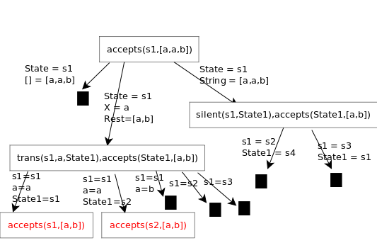
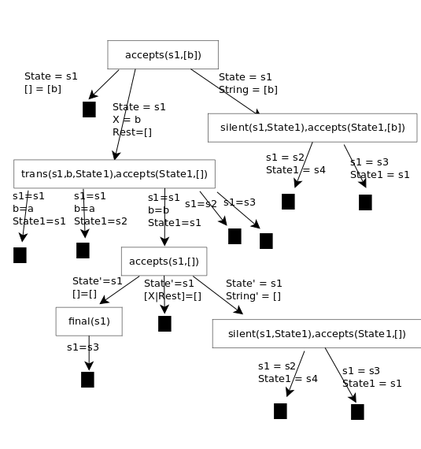

Lenguajes Declarativos
Claudio Vaucheret
2016-01-11 lun 00:00
Created: 2021-03-16 mar 13:36
Lenguajes Declarativos
Características
- Programa es Lógica + Control (Kowalski)
- X = X + 1 ¿que significa?
- Semánticas equivalentes a la operacional
- Programa es Algoritmo + Estructura de Datos (Wirth)
- Debugging, Correctitud, Prueba de Programas
- Análisis de Programas, Web Semantics
Lenguajes
- Relacional (Prolog)
- Ciao Prolog http://ciao-lang.org
- Swi Prolog http://www.swi-prolog.org/
- Funcional
- scheme (lisp) https://racket-lang.org/
- erlang (concurrency)
- Typed declarative languages
- Haskell https://www.haskell.org/
- Mercury https://mercurylang.org
Prolog
Programación en Lógica
- Cláusulas de Horn
- Resolución SLD (basado en resolución de Robinson)
- Lógica como lenguaje de programación
Ejemplo fibonacci
sucesion de fibonacci
En matemáticas, la sucesión de Fibonacci (a veces llamada erróneamente serie de Fibonacci) es la siguiente sucesión infinita de números naturales:
\(1,1,2,3,5,8,13,21,34,55,89,144,233,377,610,987,1597 \ldots\)
La sucesión comienza con los números 1 y 1 y a partir de estos, cada término es la suma de los dos anteriores, es la relación de recurrencia que la define.
A los elementos de esta sucesión se les llama números de Fibonacci. Esta sucesión fue descrita en Europa por Leonardo de Pisa, matemático italiano del siglo XIII también conocido como Fibonacci. Tiene numerosas aplicaciones en ciencias de la computación, matemáticas y teoría de juegos. También aparece en configuraciones biológicas, como por ejemplo en las ramas de los árboles, en la disposición de las hojas en el tallo, en las flores de alcachofas y girasoles, en las inflorescencias del brécol romanesco y en la configuración de las piñas de las coníferas.
Conejos
una forma de exponer la sucesión de fibonacci es presentando el crecimiento de una población de conejos con las siguientes reglas:
- un conejo adulto, cada mes se reproduce a si mismo generando un conejo joven.
- un conejo joven se vuelve adulto en un mes.
| mes | 0 | 1 | 2 | 3 | 4 | 5 | 6 | 7 |
|---|---|---|---|---|---|---|---|---|
| adultos | 1 | 1 | 2 | 3 | 5 | 8 | 13 | |
| jovenes | 1 | 1 | 1 | 2 | 3 | 5 | 8 | |
| total | 1 | 1 | 2 | 3 | 5 | 8 | 13 | 21 |
programa
:- module(fibonacci,[f/2]).
:- use_package(fsyntax).
:- fun_eval arith(true).
:- fun_eval defined(true).
f(0) := 1.
f(1) := 1.
f(N) := f(N - 1) + f(N - 2) :- N >= 2.
Sintaxis
Términos:
- Atomos
- Números
- Variables
- Términos Complejos
los caracteres válidos son:
A , B ... Z
a , b ... z
+ , - , * , / , < , > , = , : , . , & , ~
Atomos
Un átomo es:
Una cadena de caracteres de letras mayúsculas, minusculas, digitos y guión bajo, que comience con una letra minúscula. ejemplos:
casa trabajo alberto eLLio x21Una secuencia arbitraria de caracteres encerrado en comillas simples. ejemplos:
'Alberto' 'Dolar21' 'EL Paso' '&^%si'
una cadena de solo caracteres especiales. ejemplos
@= ===> :-
Números
ejemplos
-8 -1 34 23.98 10001 1697.877443
Variables
Una variable es una cadena de caracteres de letras mayúsculas, minúsculas, digitos, guión bajo, que comience con una letra mayúscula o con un guión bajo. ejemplos:
X Y Variable _etiqueta X_526 List HEAD
Términos Complejos
Un término se compone de un functor seguido de cero a N argumentos entre paréntesis y separados por comas. Cada argumento es un término.
ejemplos:
fecha(12,octubre,2016)
animal_peligroso('Leon')
arbol(23,arbol(12,nil,nil),nil)

Listas
- .(1,.(2,.(3,.(4,[])))) dos argumentos Cabeza y Cola ./2
- [1|[2|[3|[4|[]]]]] notacion alternativa [|]
- [1,2|[3|[4|[]]]] = [1,2,3|[4|[]]] = [1,2,3,4|[]] = [1,2,3,4]
- Unificar [a,1,b,4,c] = [X,Y|Z] —> X=a, Y=1, Z=[b,4,c]
Ejemplo Autómata Finito

Ejemplos de cadenas aceptadas:
aabbab, ab, aaab, babab
Ejemplos de cadenas rechazadas
aabb, aa, bb, ababa
Código
El código en prolog que representa el autómata es
final(s3).
trans(s1,a,s1).
trans(s1,a,s2).
trans(s1,b,s1).
trans(s2,b,s3).
trans(s3,b,s4).
silent(s2,s4).
silent(s3,s1).
Código
el código que representa el reconocedor de las cadenas es
accepts_(State,[]):-
final(State).
accepts_(State,[X|Rest]):-
trans(State,X,State1),
accepts_(State1,Rest).
accepts_(State,String):-
silent(State,State1),
accepts_(State1,String).
Código
el código principal es
:- module(automata,[main/1],_).
:- use_module(library(iso_char)).
main([State,Chain]):-
( accepts(State,Chain) -> display('aceptada '),nl
;
display('rechazada '),nl
).
main(_):- display('especificar estado y cadena '),nl.
accepts(State,String):-
atom_chars(String, Chars),
accepts_(State,Chars).
Arbol SLD
accept(s1,[a,a,b]).

Arbol SLD
accept(s1,[a,b]).

Arbol SLD
accept(s1,[b]).

Arbol SLD
accept(s2,[b]).

Arbol SLD
accept(s4,[b]).

\(Tp^n\)
\(U = \{ a,b,s1,s2,s3,s4,[],[a],[b],[s1],\ldots,[a,a],[a,b],\ldots\}\)
\(Bp = \{final(a),final(b),\ldots, trans(a,a,a) , trans(a,b,a) , \ldots\)
\(accepts(a,a), accepts(a,[]) \ldots \}\)
\(Tp(\{\}) = \{final(s3),trans(s1,a,s1),trans(s1,a,s2),trans(s1,b,s1)\)
\(trans(s2,b,s3),trans(s3,b,s4),silent(s2,s4),silent(s3,s1)\}\)
\(Tp^1(\{\}) = Tp(\{\}) \cup \{accepts(s3,[])\}\)
\(Tp^2(\{\}) = Tp^1(\{\}) \cup \{accepts(s2,[b]\}\)
\(Tp^3(\{\}) = Tp^2(\{\}) \cup \{accepts(s1,[a,b])\}\)
\(Tp^4(\{\}) = Tp^3(\{\}) \cup \{accepts(s3,[a,b])\)
\(accepts(s1,[a,a,b]),accepts(s1,[b,a,b])\}\)
\(Tp^5(\{\}) = Tp^4(\{\}) \cup \{accepts(s2,[b,a,b])\)
\(accepts(s3,[a,a,b]),accepts(s3,[b,a,b]),accepts(s1,[a,a,a,b])\)
\(accepts(s1,[b,a,a,b]),accepts(s1,[a,b,a,b]),accepts(s1,[b,b,a,b])\}\)